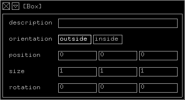
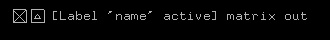
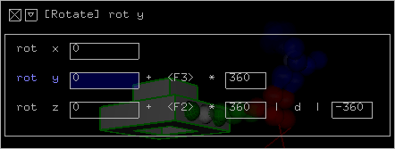

The inspector lets you examine and change the values of the currently
selected module.
Usage Hints
Because the inspector plays a quite important role, let me explain
how to use some of it features:
Minimizing
The inspector is the only minimizable window in kodisein. When
minimized, it displays the close and maximize buttons in the lower
left corner of the screen. To the right of this buttons, it prints
the name of the currently selected module in square brackets:
It may also show the name of the module's selected connector
and additional information about the object:

The menu item window > show/hide inspector toggles
between the minimized and maximized version and using it's shortcut
(i by default) might speed up your work drastically.
Note, that the only way to get rid of the inspector is to use
it's close button.
Input Fields
To edit values in the inspector, click into one of the framed
input fields. The cursor (vertical line) indicates, that every
keyboard input goes to this field now. To leave the input mode,
click somewhere outside the field or press RETURN.
The following table lists some special keys and their function
while using input fields:
| key |
function |
|
advances the cursor to the next input field
|
|
advances the cursor to the previous input field |
| a |
move cursor before first letter |
| e |
move cursor behind last letter |
| k |
delete from cursor to last letter |
| a |
select complete text |
Note, that most of the input fields expect numerical values and
therefor ignore any character input.
Highlighting
When you select a value in connector of a module, the
corresponding field will be highlighted in the inspector (blue).
If you activate an input field in the inspector, the corresponding
value in connector of the module will be highlighted (white).
Description Fields
The first field in the inspector is the description field (except
for value modules). The text you enter here will be used in the
automatically generated documentation.
Entering small texts in these fields will enable you (and maybe
others) to use your projects without the necessity to analyse
them beforehand.
Value Operation Chains

You will quite often apply some mathematical operations to the
values of a modulator before connecting it to the value in
connector of a module.
The inspector will display this mathematical operation module
chain (up to a certain depth) behind the value field of each value
in connector. This enables you to examine and edit many modules
by picking only one, which is quite practical because the mathematical
operation modules are very small and not easy to pick.
>>> user interface
|